Zentyal Configuration¶
Follow this guide to setup and manage an AAltSys Server using Zentyal. Documentation for Zentyal itself is found at http://doc.zentyal.org/en.
Note
Your server is administered with Zentyal using the Firefox web browser, and other browsers may not work correctly. Specifically, versions of Microsoft’s Internet Explorer which do not conform to HTML5 standards cannot be used to administer Zentyal.
There are thee accepted ways to access Zentyal administration:
- At the server console, login to the system as the administrator, or
- At a local workstation, go to browser address https://__server.IP.address__, or
- At a local workstation, go to browser address https://__hostname__.
Login to Zentyal using your administrator __username__ and __password__ to perform the following initial configuration steps.
Module Status¶
On the Zentyal menu, select Core ‣ Module Status. Check that all installed modules are active; that is, that their statuses are checked. The following image is from a new install. (DHCP should be checked only on servers used as network gateways.) After activating modules, click on Save Changes in the top bar, and then click Save to finalize the change.
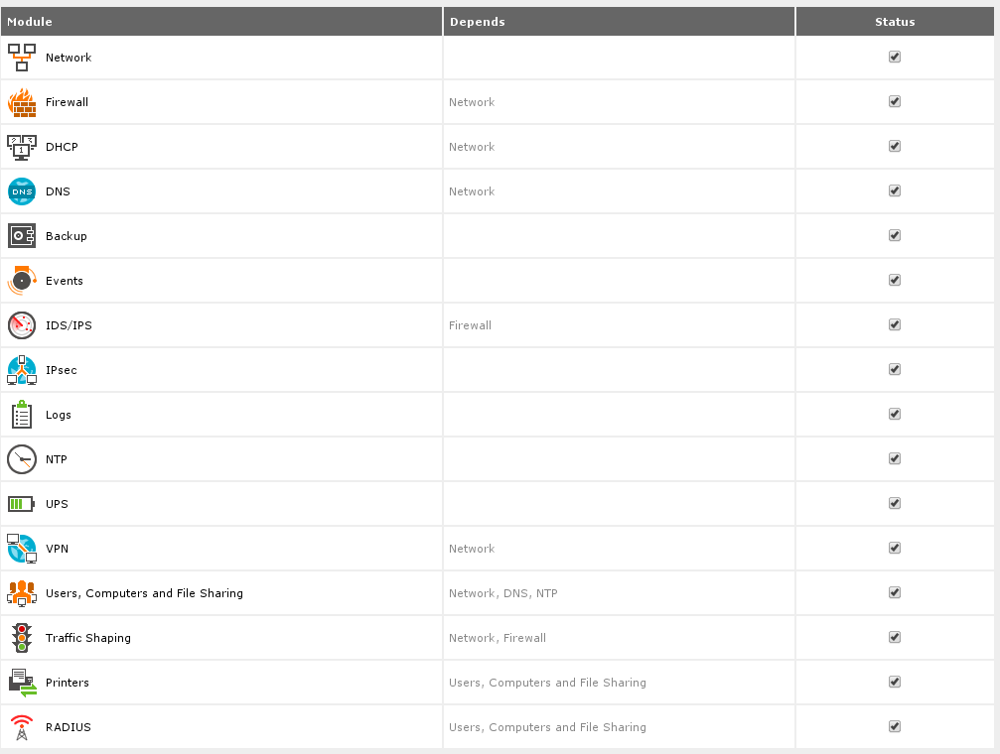General Information¶
Check the information on the System ‣ General page for any installation entry errors.
Note
Zentyal 2.2: The password change option on this page requires special procedures, as described in Change Password.
System Backup¶
Configure backups at Core ‣ System ‣ Backup. Display the Configuration and Status tab, and set the following options to tell Zentyal how to backup:
| Setting | Value |
|---|---|
| Host or Destination | /home/mnt/backup |
| Full backup frequency | Weekly -- on Monday |
| Keep previous full copies | maximum number -- 5 |
Below is a screen shot of these settings.
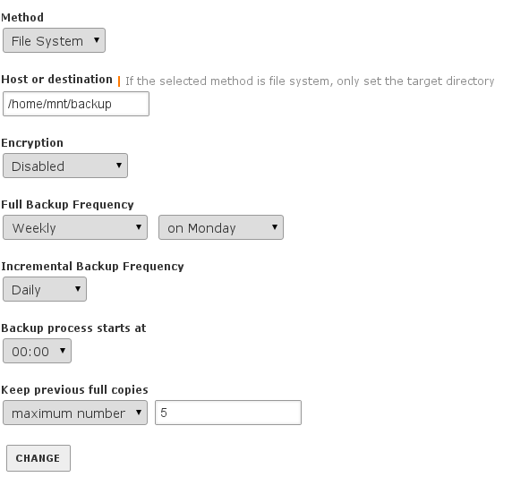Now click the Includes and Excludes tab to tell Zentyal what to backup. Click Add new to add each of the following entries, going up from the bottom of this list:
| Type | Exclude or Include |
|---|---|
| Include Path | /etc/cups |
| Include Path | /home |
| Exclude Path | /home/mnt |
| Exclude Path | / |
Then delete any entries not on the above list, leaving the four lines displayed in the following image:
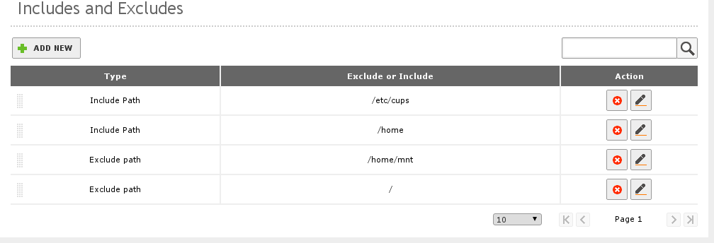Network Interfaces¶
At Core ‣ Network ‣ Interfaces, There are two possible configurations for the network interface eth0 depending on whether the server will be used as a network gateway or as a peer on a LAN.
For network gateways, we recommend configuring eth0 with method DHCP, and the External (WAN): box must be checked.
Note
When a gateway server is reconfigured from DHCP to static, a default gateway record must be added as well. Changing from static to DHCP requires deleting the default gateway first.
Where a server is a LAN peer, only eth0 should be connected. The interface should be set to a static IP address, and the External (WAN): box must not be checked. An example of this configuration is illustrated following.
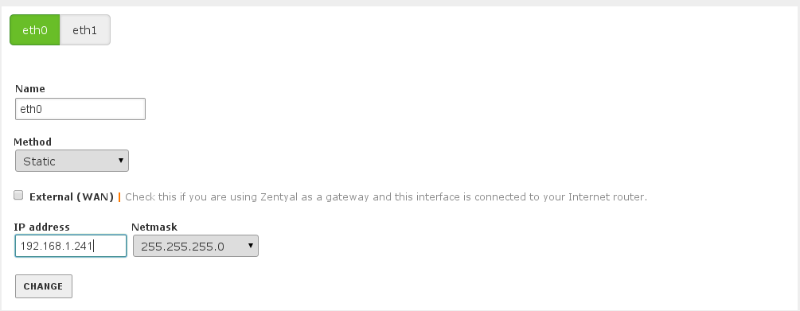More details on Zentyal networking are found at Server Network Setup.
Network Gateway¶
When eth0 is an external interface configured to obtain its IP address through DHCP, Zentyal should configure the Internet gateway for your system as the following example in Core—->Network——>Gateway shows.
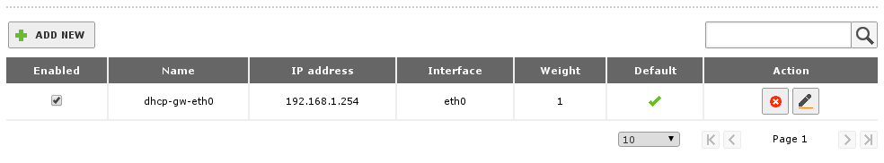Network Services¶
In section Core ‣ Network ‣ Services, a Network Service definition must be added so that firewall rules can be created later. First click add new to add the following service:
| Service Name | Description |
|---|---|
| webmin | AAltsys webmin service |
Once the new service is added to the list, click the Configuration button for webmin and add a configuration for:
| Protocol: | TCP/UDP |
| Source port: | any |
| Destination: | Single port --> 10000 |
The resulting configuration is displayed following:
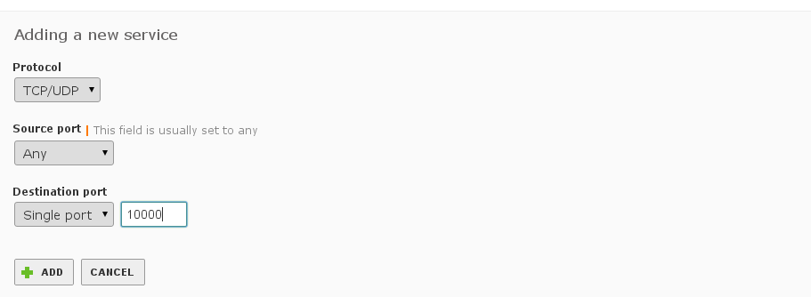Tip
Remember to click Change when making configuration changes.And always save your changes.
Software Management¶
At menu selection Core ‣ Software Management ‣ Settings: for the setting Perform automatic security updates, choose Enabled, and remember to click Change, as shown following.
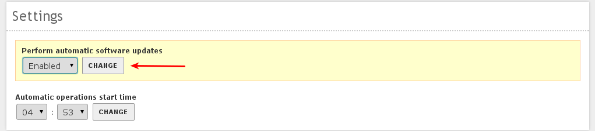Note
The Zentyal 3.0 Gateway menu section was formerly known as UTM.
Firewall Packet Filter¶
Select Gateway ‣ Firewall ‣ Packet Filter Click the ``Configure rules` link below Filtering rules from internal networks to Zentyal.

Then click Add new to enter this rule:
| Decision | Source | Service | Description |
|---|---|---|---|
| ACCEPT | Any | webmin | (blank) |
The new rule will be positioned at the top of the list as shown following:
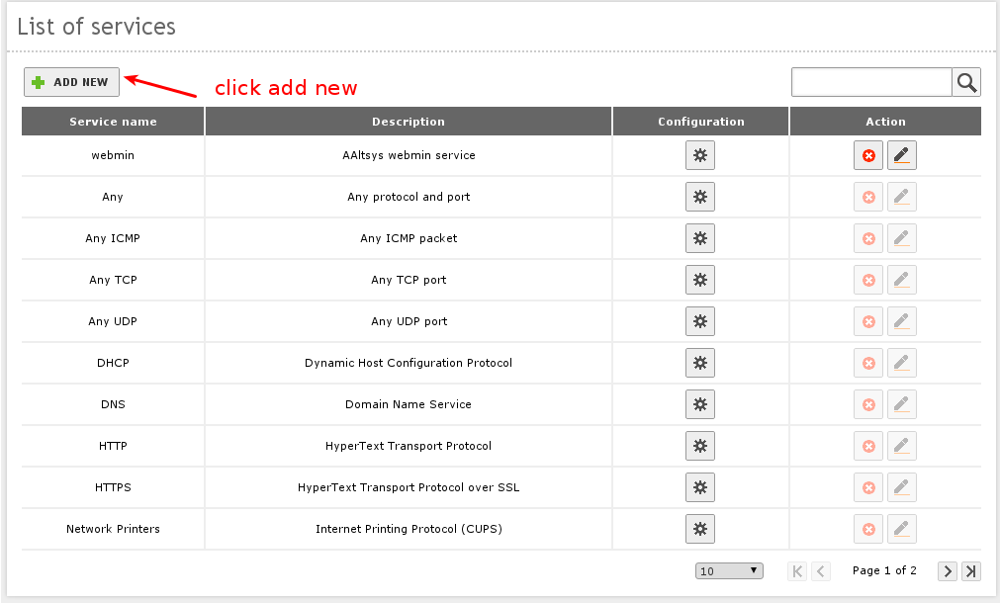 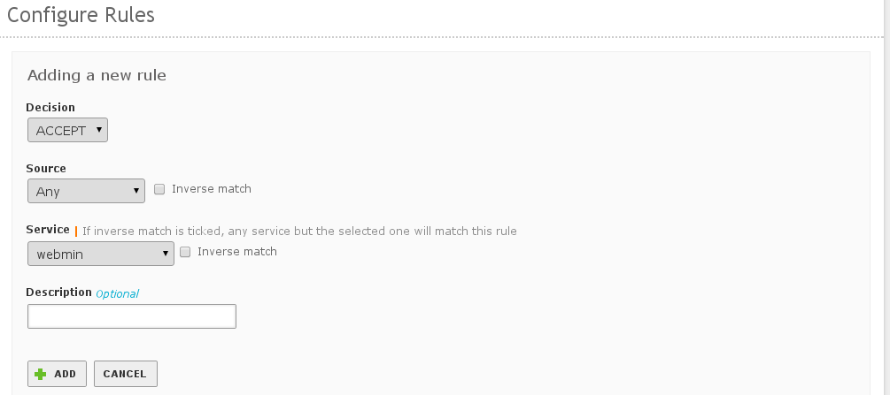IDS¶
At Gateway –> IDS, check the Enabled box for eth0 in the Intrusion Detection System.
DNS¶
At Infrastructure ‣ DNS, click Add new under Forwarders to add your ISP’s forwarding DNS entries, or enter IP addresses for known good DNS servers. (Google DNS servers are shown here.)
Note
Zentyal 2.2: Click Add new under Domains to add a new local domain, local.aaltsys.net, but do not enter an IP address.
The following image shows the resulting DNS page:
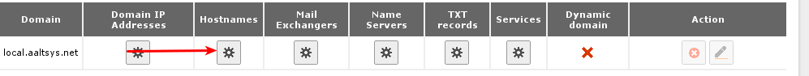Note
The local.aaltsys.net domain is not checked as Dynamic. This feature will be configured in the DHCP section to follow.
- Click the configuration icon below Hostnames on the local.aaltsys.net domain.
- Click the configuration icon below Alias on the __hostname__ host, then click Add new to add a new alias.
- Type a new alias aaltsysserver for this host, then click add to accept it.
DHCP¶
Note
Skip this section if you are not configuring a network gateway server.
Use section Infrastructure DHCP to configure interface eth1. (Only static internal interfaces provide DHCP services.) Go to Interface—–>DHCP and click the eth1 configuration button. Settings for the Common options follow:
| Option name | Setting value |
|---|---|
| Default gateway | Zentyal |
| Search domain | Zentyal domain --> local.aaltsys.net |
| Primary name server | local Zentyal DNS |
| Secondary name server | (IP of your DSL or cable modem) |
| NTP server | local Zentyal NTP |
| WINS server | none |
Tip
The Secondary nameserver value should be set to the IP address of your DSL or cable interface.
Click Change to save the Common options settings. The following screenshot shows a DHCP configuration, where the cable modem uses IP address 192.168.1.254.
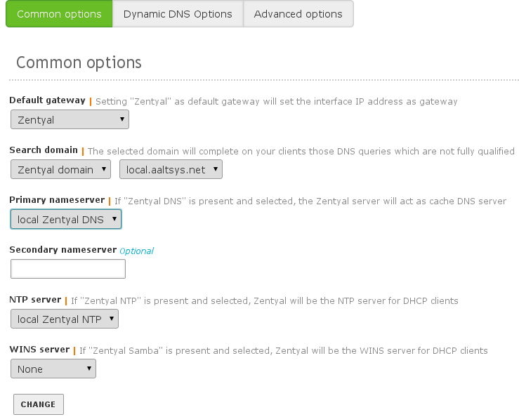Click the Dynamic DNS Options tab on the DHCP page, and click the Enabled: checkbox, and click Change. The settings on this page should be:
| Option name | Setting value |
|---|---|
| Enabled | (Checked) |
| Dynamic domain | local.aaltsys.net |
| Static domain | Same as Dynamic Domain |
The following screenshot shows Dynamic DNS Options settings:
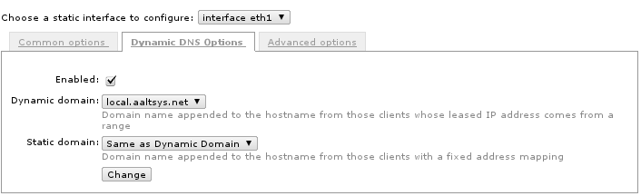Under Ranges, click Add new to add an IP address range for dynamic IP assignment in your local subnet. We recommend excluding addresses above x.x.x.200 to provide static IP address space, so our default settings are:
| Name: | Local dynamic hosts |
| From: | 192.168.2.1 |
| To: | 192.168.2.200 |
Click Add to complete the change. The result is displayed following:
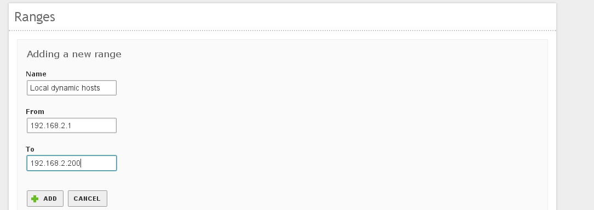Save Changes¶
Click Save changes in the Zentyal title bar, and under Save configuration, click Save. Your server functions are configured, and now office use can be set up.